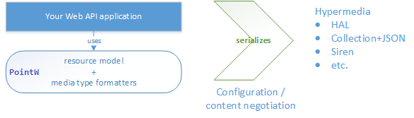

The goal of this project is to provide a simple abstraction for modelling resources, decoupled from formatting concerns. Your Web API application can model resources without having to worry about how those resources become which representations. Through configuration your application will be able to support multiple media types, mixing and matching as you wish, without impacting the core api logic. Through content negotiation your clients can pick supported media types they prefer.
In other words, you write this:
public class Person : ResourceModel
{
public string Name { get; set; }
public string Address { get; set; }
public string PhoneNumber { get; set; }
}
...and your clients see this (application/hal+json)...
{
"name": "John Doe",
"address": "123 Main St.",
"_links": {
"car": {
"href": "http://example.org/api/car/1"
},
"self": {
"href": "http://example.org/api/person/1"
}
}
}
...or this (application/vnd.collection+json)...
{
"collection": {
"href" : "http://example.org/api/person"
"items": [
{
"data": [
{ "name": "name", "value": "John Doe" },
{ "name": "address", "value": "123 Main St." },
],
"href": "http://example.org/api/person/1",
"links": [
{ "rel": "car","href": "http://example.org/api/car/1" }
]
}
]
}
}
Please visit the project wiki for more details.